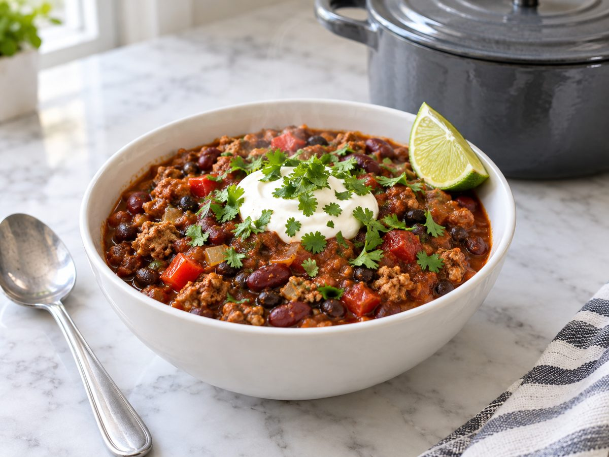
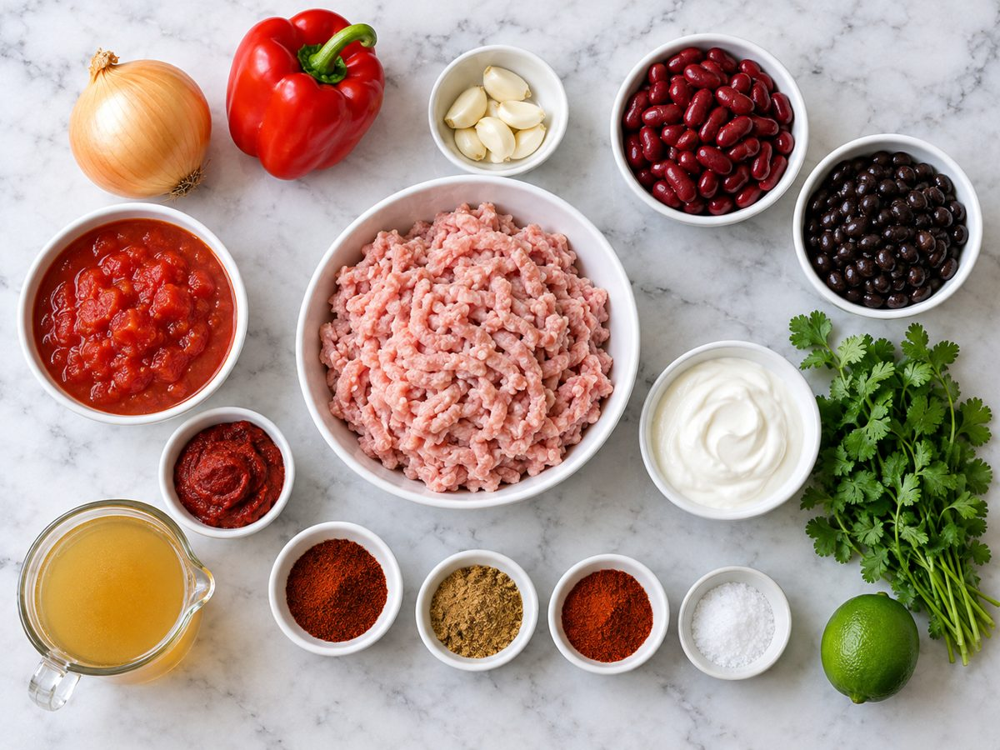
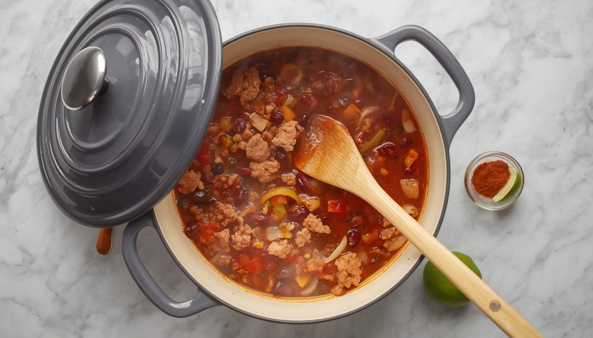
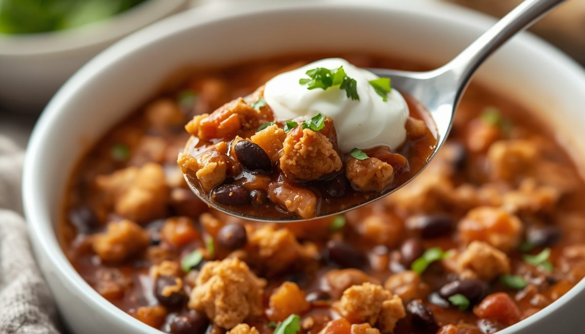
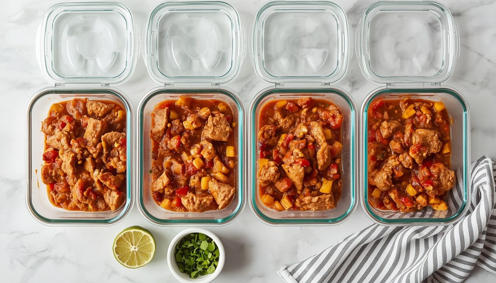

One-Pot High-Protein Turkey Chili (30-Minute Meal Prep)
Per serving (about 1.5 cups / 360g), including 2 tbsp Greek yogurt. Nutrition is an estimate and varies with brands.

This is a low-calorie high-protein dinner that asks for one pot and about half an hour. Lean ground turkey and two kinds of beans bring the protein, while tomato, peppers and smoky spices keep every spoonful rich.
It is built for easy meal prep for work. Make a batch on Sunday, portion it into six containers and you have lunches sorted for the week. Greek yogurt stands in for sour cream, so you get the creamy topping without the extra fat.
Cooking for a different crowd? Ground beef (beef mince) or chicken works in place of turkey. Add more chili powder or a chopped jalapeño if you like heat.
Ingredients

- 1 tbsp (15ml) olive oil
- 1 medium yellow onion, diced (about 1 cup / 150g)
- 1 large red bell pepper (capsicum), diced (about 1 cup / 150g)
- 4 cloves garlic, minced
- 1.5 lb (680g) lean ground turkey (turkey mince)
- 2 tbsp (32g) tomato paste (tomato purée)
- 2 tbsp (16g) chili powder
- 1 tbsp (6g) ground cumin
- 1 tsp smoked paprika
- 1 tsp salt
- 1 can (14.5 oz / 411g) diced tomatoes
- 1 can (15 oz / 425g) black beans, drained and rinsed
- 1 can (15 oz / 425g) kidney beans, drained and rinsed
- 1 cup (240ml) low-sodium chicken or turkey broth (stock)
- 1 lime, juiced (about 2 tbsp / 30ml)
- To serve: 3/4 cup (180g) plain nonfat Greek yogurt and 1/4 cup (10g) chopped cilantro (coriander)
Instructions
- Heat the olive oil in a large pot over medium-high heat. Cook the onion and bell pepper for 3 to 4 minutes until softened. Add the garlic and cook for 30 seconds.
- Add the ground turkey. Break it up with a wooden spoon and cook for 5 minutes, until no pink remains.
- Stir in the tomato paste, chili powder, cumin, smoked paprika and salt. Cook for 1 minute so the spices bloom.
- Add the diced tomatoes with their juice, both beans and the broth. Bring to a boil, then lower the heat and simmer for 10 minutes, stirring now and then.

- Take the pot off the heat and stir in the lime juice. Taste and add more salt if needed.
- Portion into 6 containers. Serve each bowl with 2 tbsp Greek yogurt and a sprinkle of cilantro.

Meal Prep, Storage and Reheating

- Fridge: keeps for 4 to 5 days in airtight containers. Cool the chili before closing the lids.
- Freezer: freezes well for up to 3 months. Thaw overnight in the fridge.
- Reheat: microwave for 2 to 3 minutes, stirring halfway, or warm gently in a pot. Add a splash of broth if it has thickened.
- Toppings: add the yogurt and cilantro after reheating, not before storing.
Quick Questions
Can I use ground chicken or beef? Yes. Use the same weight. Lean ground beef (beef mince) gives a richer flavor with a little more fat.
How do I make it spicier? Add a chopped jalapeño with the onion, or a pinch of cayenne with the other spices.
Is it good for weight loss? At 360 calories and 32g protein per bowl, it is a filling, high-protein meal prep option that fits most calorie targets.